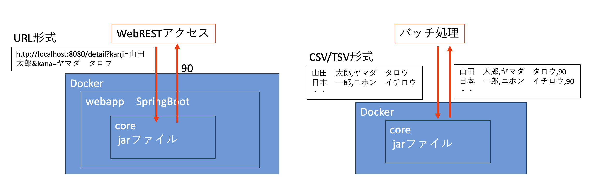

氏名漢字カナ突合モデル概要
本ドキュメントについて
本ドキュメントは，漢字カナ突合モデルの開発にあたり，漢字カナ突合モデル＿要件定義書に記載された機能要件を基に，基本設計を記述した資料である。また，本漢字カナ突合モデルの外部IF仕様については，「外部IF仕様書」を，コマンドラインでの実行方法の仕様については，「コマンドラインIF定義書」を参照のこと。
実行方式
漢字カナ突合モデルは，Javaの実行形式のモジュール(core)であり，Java17で実行可能として提供される。また，WebIF用に，SpringBoot3.2でモジュールをラップしたもの(webapp)を，コマンドラインインターフェースとしてcoreモジュールを，Docker形式のイメージとして提供される。図１のモデルの提供方式参照のこと。
図１ モデルの提供方式
モデルについて
漢字カナ突合モデルの漢字姓名とカナ姓名のマッチング機能においては，辞書（後述5.2章）を用いるが，公金受取口座のデータから目検で作成した辞書を用いるもの（漢字カナ突合モデル）と，公金受取口座のデータを用いないもの（漢字カナ突合モデル（OSSバージョン))の２種類を作成することとする。
漢字カナ突合モデル
公金受取口座の目検から作成した辞書も使用することで，難読名などのオープンソース辞書などに登録されていない，漢字とカナ姓名のペアを拾うことが可能となる。ただし，目検辞書のサンプリング結果から，ある程度間違いが含まれることが判明している。
漢字カナ突合モデル（OSSバージョン）
オープンソース辞書及び，Webクロール辞書といった信頼度の高い辞書を用いるため，漢字姓名とカナ姓名の一致判定の精度が高く判定できる。
用語集
本ドキュメントで使用する用語集を表１に示す
表１ 用語集
用語 |
意味 |
備考 |
|---|---|---|
漢字カナ突合モデル |
公金受取口座のデータ も含んだ漢字とカナ姓名を突合する モデルである。JavaのJarファイルで 構築され，Docker形式で提供される |
|
漢字カナ突合モデ ル（OSSバージョン） |
漢字 カナ突合モデルから，公金受取口座 で作成した漢字とカナの辞書をのぞ いた，モデル。JavaのJarファイルで 構築され，Docker形式で提供される |
|
漢字姓名とカナ 姓名マッチング機能 |
漢字カナ突合モデ ル及び，漢字カナ突合モデル（OSSバ ージョン）のモデル内の１機能。漢 字姓名とカナ姓名を入力し，漢字姓 名の読みとして入力したカナ姓名が 正しいかどうかを判定して返す機能 |
|
漢字姓名から カナ姓名の推計機能 |
漢字カナ突合モ デル及び，漢字カナ突合モデル（OS Sバージョン）のモデル内の１機能。 漢字姓名を入力し，それに対応する 読み仮名であるカナ姓名を複数返す |
|
カナ姓名から 漢字姓名の推計機能 |
漢字カナ突 合モデル及び，漢字カナ突合モデル （OSSバージョン）のモデル内の１機 能。カナ姓名を入力し，それに対応 する漢字である漢字姓名を複数返す |
|
coreモジュール |
漢字カ ナ突合モデルもしくは，漢字カナ突 合モデル（OSSバージョン）のモデル の実態。Jarファイルで構成される。 |
|
webappモジュール |
漢字カナ突合モデルもしくは，漢 字カナ突合モデル（OSSバージョン） のWebIFの実態。Jarファイルで構成 され，coreモジュールを内包する。 |
|
オープ ンソース（OSS）辞書 |
||
Webクロール辞書 |
Web からクロールして取得した辞書 [4] |
|
デジタル 庁辞書（公金受取口 座辞書，目検辞書） |
公金受取口座に 登録されている漢字姓名とカナ姓名 を目検し，一致と判定した漢字とカ ナのペアから作成した辞書。ペア数 は100万超と多いものの，サンプリン グ検査の結果，ある程度の間違いを 含んでいることが確認されている。 |
約5400万の 登録データ から作成。 |
単漢字辞書 |
「亜」「ア」のよ うに，漢字１文字に対して，その読 みが複数個紐づけられた辞書。オー プンソース辞書であるmozc [5]_や， Webから取得した辞書 [6]_から作成 |
|
異体字辞書 |
異体字である「邊」を「 辺」に紐づける辞書。オープンソー ス辞書であるmozc，skk [7]_や，Web から取得 [8]_したデータから作成。 |
|
統計辞書 |
公金受 取口座に登録されている，単語単位 の漢字とカナのペアを集計し，４つ 以上ある組み合わせを有効として， 作成した漢字とカナのペアの辞書。 |
約5400万の 登録データ から作成。 |
外国人モデル |
外国 人に特化したマッチングモデル [9] |
|
漢 字カナ突合システム |
漢字カナ突合 モデルの外部公開や口座情報登録・ 連携システムから利用できるように ，漢字カナ突合モデルをラップし， WEBAPI形式で使えるようにしたシス テム。令和6年度「漢字カナ突合シス テムの開発・運用保守業務」で調達 |
|
簡易モデル |
信頼度の高い辞書のみを用いて漢 字とカナのマッチングを行うモデル |
|
詳細モデル |
信 頼度の低い辞書などを用いたアルゴ リズムを複数用意し，それらの判定 結果を多数決で評価し，漢字とカナ が一致しているかどうかを判定する |
|
簡易モデル（OSS） |
簡易モデルでデジタル庁作成辞書を 使わないもの。実態は簡易モデルと 簡易モデル（OSS）は同じものとなる |
|
詳細モデル（OSS） |
詳細モデルから デジタル庁作成辞書を除いたもの。 |
機能要件
機能一覧
本モデルにおける機能は下記３機能となる。それぞれについて，次項以降に記載する。ここで，漢字姓名は，外国人名のようにアルファベットで記載された姓名も含むこととする。
漢字姓名とカナ姓名マッチング機能
漢字姓名とカナ姓名を入力し，漢字姓名の読みとして入力したカナ姓名が正しいかどうかを判定して返す機能。主に，マイナポータルからの公金受取口座の登録，変更時に入力された口座名義人（カナ姓名）とマインバーカードの住基本人情報（漢字姓名）が一致しているかどうかを判定するために使用する。
漢字姓名からカナ姓名の推計機能
漢字姓名を入力し，それに対応する読み仮名であるカナ姓名を複数返す機能
カナ姓名から漢字姓名の推計
カナ姓名を入力し，それに対応する漢字である漢字姓名を複数返す機能
漢字姓名とカナ姓名のマッチング機能
仕様
漢字姓名とカナ姓名のマッチング機能は，漢字姓名とカナ姓名を入力し，その一致判定結果を数値０−９９の範囲で返却する。
入力する漢字，カタカナ姓名の仕様
漢字姓名は，マイナンバーカードの券面情報をそのまま入力とするために，次のパターンがある。
パターン１
漢字姓名とカタカナ姓名がそれぞれ姓と名の間がスペースで区切られている。
例 漢字姓名：日本 花子
カナ姓名：ニホン ハナコ
パターン２
旧姓が[ ]書きで併記されいる。入力するカナ姓が旧姓の場合も，一致と判定する。
例 漢字姓名：日本[東京] 花子
カナ姓名：トウキョウ ハナコ
パターン３
漢字姓名部分に，アルファベット表記で入力されている。なお，アルファベット表記部分が，名，ミドルネーム，姓となっているものも許容する。
例１ 漢字姓名：ＮＩＨＯＮ ＭＩＤＤＬＥ ＨＡＮＡＫＯ
カナ姓名：ニホン ミドル ハナコ
例２ 漢字姓名：ＨＡＮＡＫＯ ＭＩＤＤＬＥ ＮＩＨＯＮ
カナ姓名２：ニホン ミドル ハナコ
パターン４
漢字姓名部分にアルファベット（ミドルネームがある場合や４ワード以上の場合もある）と漢字がアンダーバーで連結されているものが入っている。漢字もしくはアルファベットがカタカナ姓名と一致する場合には，一致と判定する。
例１ 漢字姓名：ＮＩＨＯＮ ＭＩＤＤＬＥ ＨＡＮＡＫＯ＿日本 花子
カナ姓名：ニホン ハナコ
例２ 漢字姓名：ＮＩＨＯＮ ＭＩＤＤＬＥ ＨＡＮＡＫＯ＿日本 花子
カナ姓名２：ニホン ミドル ハナコ
パターン５
漢字姓名に括弧書きで通称が入っている。漢字もしくはアルファベット及び，通称がカタカナ姓名と一致する場合には，一致と判定する。
例１ 漢字姓名１：ＮＩＨＯＮ ＭＩＤＤＬＥ ＨＡＮＡ＿日本 花（東京 花子）
カナ姓名１：ニホン ハナ
例２ 漢字姓名１：ＮＩＨＯＮ ＭＩＤＤＬＥ ＨＡＮＡ＿日本 花（東京 花子）
カナ姓名１：ニホン ミドル ハナ
例３ 漢字姓名１：ＮＩＨＯＮ ＭＩＤＤＬＥ ＨＡＮＡ＿日本 花（東京 花子）
カナ姓名１：トウキョウ ハナコ
モデルの種類について
漢字カナ突合モデルは，要件定義書の６業務フローを基に，漢字とカナの突合判定に時間のかからない「簡易モデル」と，詳細に漢字とかなの突合判定を行う「詳細モデル」の２種類とする。
マイナポータルからのリアルタイムに利用する場合には，「簡易モデル」を利用し，公金受取口座に登録された漢字姓名とカナ姓名の洗い替え処理には，時間がかかるが精度の良い「詳細モデル」を利用する。
漢字姓名からカナ姓名の推計機能
仕様
漢字姓名からカナ姓名の推計機能は，漢字姓名と推計するカタカナ姓名の個数を入力し，その読み仮名として推計されるカタカナ姓名の一覧を返却する。また，推計されるカタカナ姓名は，アルゴリズムから推計されるそのカタカナ姓名確率が高い順に，指定された個数個を返却する。
入力する漢字姓名の仕様
入力する漢字姓名は，漢字姓名を全角文字でスペースで区切ったものを入力する。例えば「日本 一郎」や「ＢＩＬＬＹ ＪＯＥＬ」という形で入力する。なお，ミドルネームはいくつあっても良い。
アルゴリズム
漢字姓名からカナ姓名を推測するために，漢字姓名とカナ姓名のペアを入力とした，ディープラーニングモデル（Seq2Seq+Transformer）を用いてあらかじめ学習済みのモデルを用いて，推測を行うこととする。
カナ姓名から漢字姓名の推計機能
仕様
カナ姓名から漢字姓名の推計機能は，カナ姓名と推計する漢字姓名の個数を入力し，その漢字として推計される漢字姓名の一覧を返却する。また，推計される漢字姓名は，アルゴリズムから推計されるその漢字姓名確率が高い順に，指定された個数個を返却する。
入力するカタカナ姓名の仕様
入力するカタカナ姓名は，カタカナ姓名を全角文字でスペースで区切ったものを入力する。例えば「ニッポン イチロウ」や「ビリー ジョエル」という形で入力する。なお，ミドルネームはいくつあっても良い。
アルゴリズム
カタカナ姓名からカナ姓名を推測するために，カナ姓名と漢字姓名のペアを入力とした，ディープラーニングモデル（Seq2Seq+Transformer）を用いてあらかじめ学習済みのモデルを用いて，推測を行うこととする。
**
外部IF
Web形式のIF
漢字カナ突合APIから利用可能とするために，WebのURL形式でアクセスし，JSONで結果を返すREST形式のWebAPIを提供する。本機能を実現するにあたり，Dockerイメージでの提供を想定している。
詳細の，Web形式のIFの仕様については，「別紙 外部IF仕様書 漢字カナ突合モデル」を参照のこと。
バッチ形式
漢字カナ突合モデルは，の漢字姓名とカナ姓名の一致判定や，漢字からカナの推計，カナから漢字の推計を処理可能とするために，バッチ処理のインターフェースを提供する。入力は，CSVもしくはTSV形式のファイルとし，出力結果をファイルに出力する。
詳細の，バッチ形式のIFの仕様については，「別紙 コマンドラインIF仕様書 漢字カナ突合モデル」を参照のこと。
アルゴリズム
概要
漢字カナ突合モデルは，漢字とカナの一致を判定するために，漢字とカナのペアで作成した辞書を予め用意しておき，これらとマッチングすることで一致不一致を判定する。
また，予め漢字姓名とカナ姓名のペアを用いて，事前学習させたディープラーニングモデル（Seq2Seq＋Transformer）を用いて，漢字からカナ姓名もしくは，カナから漢字姓名を推計するモデルも併せて用いる。
なお，アルゴリズム等の詳細については「別紙 漢字カナ突合モデル説明」を参照のこと。
前提条件
漢字姓名フォーマットへの対応
漢字姓名は，マイナンバーカード券面記載情報のフォーマットでの入力も想定している。そのために，3.2漢字姓名とカナ声明のマッチング機能に記載の，それぞれのフォーマットにおいても正しくマッチングする必要がある。
旧姓
別名
アルファベットと漢字姓名併記
空白くぎりの対応
入力される漢字姓名，カナ姓名において，必ずしも姓と名の間に全角スペースが入っていないパターンも考慮する必要がある。
単純な間違い
例えば漢字姓名が「田中 一郎」，カタカナ姓名が「タナ カイチロウ」などと，全角スペースが正しい位置でない場合も存在する可能性を考慮したアルゴリズムとする
ミドルネームによるもの
外国人名で複数のミドルネームを持つ人などは，アルファベットのミドルネーム通りにカタカナ名にスペースが入らない可能性がある。
アルファベット名「TANAKA JOHN MANJIRO」，カタカナ名「タナカ ジョンマンジロウ」のように，区切りが合わないパターンなど
漢字カナ辞書
辞書は姓名のペアを保持する辞書として，①オープンソースの辞書から作成した漢字とカナのペア，②Webクロールによって集めた漢字とカナ姓名のペア，③公金受取口座に登録されたデータから目検によって作成した漢字とカナ姓名のペアがある。
また，単漢字辞書や異体字辞書も①オープンソースや②Webクロールによって作成したものも合わせて使う。
辞書は，漢字に対して複数のカナのペアを保持し，それぞれのペアに対して，そのペアを取得した由来（どのオープンソース辞書か，どのWebからスクレイピングしたか）などを複数保持する。
ディープラーニングモデル（AIモデル）
ディープラーニングモデルは，時系列を予測する手法であるSeq2Seqを用い，Transformerで，予めオープンソース辞書やクロール辞書を用いて学習させたモデルを用いて推論させることで，漢字姓名からカナ姓名，もしくは，カナ姓名から漢字姓名を予測させるものである。
本案件では，下記２つのAIモデルを作成した。
漢字姓名からカナ姓名を推計
カナ姓名から漢字姓名を推計
辞書マッチングアルゴリズム
漢字姓名とカナ姓名のマッチング機能においては，漢字（アルファベット）とカナが辞書に含まれているかどうかをチェックすることでマッチングを行っている。手順としては次のとおりである。辞書の種類については次章を参照。
スペースで区切り，漢字とカナを単語単位で姓名辞書とマッチング
①で漢字に異体字が入っている場合には置き換えながら，姓名辞書とマッチング
マッチしなかった漢字とカナのペアは，漢字１文字とカナ（１文字or複数）が単漢字辞書とマッチング。これを繰り返し，全ての漢字とカナが一致するかどうかを判定
③で漢字に異体字が入っている場合には置き換えながら，単漢字辞書とマッチング
外国人マッチングアルゴリズム
外国人姓名である，アルファベット姓名とカタカナ姓名のマッチングは，5.5辞書マッチング以外にも，外国人モデル [10]_を用いて，判定している。アルファベットとカタカナを与えて，外国人モデルに当てはめることで，アルファベットとカタカナが一致しているかどうかを判断する。詳細のアルゴリズムは文献を参照のこと。
統計マッチングアルゴリズム
公金受取口座に登録された約5400万件のデータを基に，漢字姓名とカナ姓名を単語単位にペアを作成した統計辞書（次章参照）を用いて，入力された漢字とカナのペアが統計辞書に入っているかどうかで判定する。判定においては，漢字とカナのペアが４個以上あるものは一致していると判定する。なお，統計辞書は，たまたま間違ったペアが複数個入る場合もあるため，信頼性は高くない可能性がある。
AIマッチングアルゴリズム
AIモデルを用いて，漢字姓名をAIモデルに入力し，推計されたカタカナ姓名のうち，確率的に信頼度が高い上位５個に入っているかどうかで，マッチングを判定する。AI判定のために必ずしも正しい結果が返ってくるわけではなく，信頼度が高くない可能性がある。
辞書
辞書の種類
アルゴリズムで用いる辞書は，姓名の漢字とカナのペアである姓名辞書（表２），一つの漢字に対する読みをペアとして持つ単漢字辞書（表３），「邊」ー「辺」のように同じ漢字で違う字体をペアとして持つ異体字辞書（表４）のそれぞれの詳細を示す。
また，公金受取口座の登録データ（約5400万）から作成した，単語単位での漢字とカナのペア数を保持した統計辞書（表５）も併せて作成する。
表２ 姓名辞書
辞書名 |
ファイル名 |
数 |
説明 |
|---|---|---|---|
オープ ンソース辞書 |
oss.json |
969,033 |
オープン ソース辞書から抜き出した漢字 とカナのペア。姓名以外も含む |
Web クロール辞書 |
crawl.json |
386,067 |
Webからスクレイピングし た姓名の一覧。外国人名も含む |
公金受 取口座辞書（ デジ庁辞書） |
s eimei.json |
1, 335,213 |
公金受取口座の 登録データから目検を行い作成 した辞書。間違いが含まれる。 |
表３ 単漢字辞書
辞書名 |
ファイル名 |
数 |
説明 |
|---|---|---|---|
単漢字辞書 |
tan kanji.json |
104,830 |
一つの漢字に対して，複数の 読みをペアとして作成した辞書 |
表４ 異体字辞書
辞書名 |
ファイル名 |
数 |
説明 |
|---|---|---|---|
異体字辞書 |
i taiji.json |
53,242 |
「邊 」ー「辺」のペアのように，異 体字である漢字に対して，それ ぞれをペアとして作成した辞書 |
表５ 統計辞書
辞書名 |
ファイル名 |
数 |
説明 |
|---|---|---|---|
統計辞書 |
stati stics.json |
2, 419,855 |
公金受取口座に登 録された約5400万件のデータを 基に，漢字姓名とカナ姓名を単 語単位に，ペアを作成した辞書 |
姓名辞書
オープンソース辞書(oss.json)
オープンソースから，漢字とカナのペアを取得し，各漢字ごとにその読みと，辞書の由来（どのオープンソース辞書か）をdicsに複数付与した，JSON形式の辞書を作成する。作成した辞書は oss.jsonというファイルにまとめる。漢字とカナのペア数は969033。
なお，姓名以外の通常の辞書も含まれる。「開ける」ー「アケル」など
例
import sys
print sys.path
例では，漢字「凄」に対し，その読みとしてカタカナが「スサ」「スゴ」のペアとして定義されている。また，「凄」ー「スサ」のペアはipadicに由来（格納されていた）し，「凄」ー「スゴ」はipadicとmozcに由来していることを示している。
Webクロール辞書(crawl.json)
Webスクレイピングを行い，取得した漢字とカナ姓名のペアを各漢字ごとにその読みと，辞書の由来（どこから取得した辞書か）を付与した，JSON形式の辞書を作成する。作成した辞書は crawl.jsonというファイルにまとめる。漢字とカナのペア数は386067
例
{ "柳": { "リーウ": { "dics": [ "china" ] }, "リュウ": { "dics": [ "hapiname", "namem3q", "yurai", "kirakira" ] ・・ |
|---|
公金受取口座辞書(semei.json)
公金受取口座に登録されている，漢字姓名とカナ姓名のペアの目検を行い，取得した漢字とカナ姓名のペアを各漢字ごとにその読みと，辞書の由来（どこから取得した辞書か）を付与した，JSON形式の辞書を作成する。作成した辞書は seimei.jsonというファイルにまとめる。漢字とカナのペア数は1335213
例は略
単漢字辞書(tankanji.json)
単漢字辞書は「亜」ー「ア」のペアのように，一つの漢字に対して，複数の読みをペアとして作成した辞書である。姓名以外のものも含む。漢字とカナ姓名のペアを各漢字ごとにその読みと，辞書の由来（どこから取得した辞書か）を付与した，JSON形式の辞書を作成する。作成した辞書は tankanji.jsonというファイルにまとめる。漢字とカナのペア数は104830
例
{ "々": { "オナジ": { "dics": [ "mj_tankanji" ] }, "クリカエシ": { "dics": [ "mj_tankanji" ] }, "ノマ": { "dics": [ "mj_tankanji" ] } }, ・・ |
|---|
異体字辞書(itaiji.json)
異体字辞書は「邊」ー「辺」のペアのように，異体字である漢字に対して，それぞれをペアとして作成した辞書である。この場合「邊」ー「辺」のぺあと，「辺」ー「邊」のペアの２つが作成される。姓名以外のものも含む。漢字とカナ姓名のペアを各漢字ごとにその読みと，辞書の由来（どこから取得した辞書か）を付与した，JSON形式の辞書を作成する。作成した辞書は itaiji.jsonというファイルにまとめる。漢字とカナのペア数は53242
例
{ "叱": { "𠮟": { "dics": [ "mozc_itaiji" ] }, "訛": { "dics": [ "tobunken_itaiji" ] }, "譌": { "dics": [ "tobunken_itaiji" ] }, ・・ |
|---|
例では，「叱」の異体字として「𠮟」，「訛」，「譌」があることを示している。また，「叱」ー「𠮟」の異体字のペアはmozc_itaijiに由来（格納されていた）していることを意味している。
統計辞書(statistics.json)
統計辞書は，公金受取口座に登録された約5400万件のデータを基に，漢字姓名とカナ姓名を単語単位に，ペアを作成し辞書として作成したものである。漢字とカナのペア数は2419855
{ "隆治": { "タカハル": { "freq": 2185, "dics": [ "statistics" ] }, "リュウジ": { "freq": 3032, "dics": [ "statistics" ] }, "リユウジ": { "freq": 110, "dics": [ "statistics" ] }, ・・ |
|---|
例では，「隆治」という漢字に対し，「タカハル」が2185個，「リュウジ」が3032個，「リユウジ」が110個あることを示している。dicsには由来としてstatistics（これ固定）を付与している。
モデル
仕様
漢字カナ突合モデルは，①公金受取口座で利用するケースと，②自治体や民間で利用可能なケースの２種類を作成する。
②の自治体や民間企業等で利用するためのモデルでは，公金受取口座のデータから作成した辞書を用いないしようとし，「漢字カナ突合モデル（OSSバージョン）」として区別する
「漢字カナ突合モデル」の簡易モデルと詳細モデル
姓名辞書においても信頼度が高い辞書（オープンソース辞書，クロール辞書）もあれば，多少間違いが含まれる（デジ庁辞書，統計辞書）ものもあり，一律に辞書にマッチしたからといって正しいと判定できないと言える。
また，AIマッチングのように確率的に判断するものに関しても，必ず正しいと判定することも難しいことから，信頼度が高い判定と信頼度が低い判定に分けて，信頼度が高いものにおいては，そのまま判定結果を利用し，信頼度が低いものにおいては，信頼度が低いものを複数個実施し，多数決で判定することとする。
簡易モデル
信頼度の高い辞書のみを用いて漢字とカナのマッチングを行う。マッチングのイメージを図２に示す。

図２ 簡易モデルのイメージ
詳細モデル
簡易モデルは，信頼度の高い辞書とのマッチングのみを行うために，難読名など辞書に存在しない漢字とカナのペアに関しては一致の判定ができない。そのため，詳細モデルでは，信頼度の低い辞書などを用いたアルゴリズムを複数用意し，それらの判定結果を多数決で評価し，漢字とカナが一致しているかどうかを判定する。
また，詳細モデルは，最初に簡易モデルを実行し，簡易モデルで一致しなかった場合のみ，詳細モデルへと判定を進める。
詳細モデルのイメージを図３に示す。

図３ 詳細モデルのイメージ
漢字カナ突合モデル（OSSバージョン）の簡易モデルと詳細モデル
漢字カナ突合モデルから，公金受取口座のデータから作成した辞書である，「デジ庁辞書」と「統計辞書」を除いたモデルを構築する。
簡易モデルと詳細モデルをそれぞれ，簡易モデル（OSS），詳細モデル（OSS）とする。なお，簡易モデルと簡易モデル（OSS）は同じものとなる。
簡易モデル
信頼度の高い辞書のみを用いて漢字とカナのマッチングを行う。マッチングのイメージを図４に示す。

図４ 簡易モデル（OSS）のイメージ
詳細モデル（OSS）
詳細モデルから，デジタル庁で作成した辞書を除いたもの。詳細モデル（OSS）のイメージを図５に示す。

図５ 詳細モデルのイメージ
非機能要件
仕様
プログラムは実行速度や拡張性，Webでの提供の容易さを考慮し，Javaで構築することとする。また，JavaのLTSバージョンである17をターゲットとしたプログラムフォーマットとする。
漢字カナ突合モデルは，コマンドラインで実行可能なモジュールとしてのcoreモジュールパッケージと，WebIFでアクセス可能で，coreモジュールを内包する，webappモジュールの２つとする。
coreモジュールは，実行可能なmain関数を用意し，コマンドラインからバッチ処理を実行可能とする。また，webappから利用可能なインターフェースクラスを用意しておく
coreモジュールは，コマンドラインで大量に一度に実行が可能とするため，内部処理にスレッドを用いて，処理速度を高めることとする。
webappモジュールは，WebIFとして構築するため，広く実績のある，SpringBootを利用して構築する。また，webappモジュールは，coreモジュールを内包する。
webappモジュールは，実行速度を高めるために，起動時に，必要なファイルを全て内部でキャッシュし，2回目以降は短時間で計算結果を返す仕様とする。
プログラム構成
プログラムは実行速度や拡張性，Webでの提供の容易さを考慮し，Javaのクラスファイルとして構築し，Jarファイルとして作成する。
JavaのバージョンはLTSである17で動くものとする
AIモデルにおいては，事前学習済みモデルをpytorchを用いて作成し，Torch Script形式に変換し，JavaのDJLライブラリを用いて，Javaで推論を行う構成とする。
以上